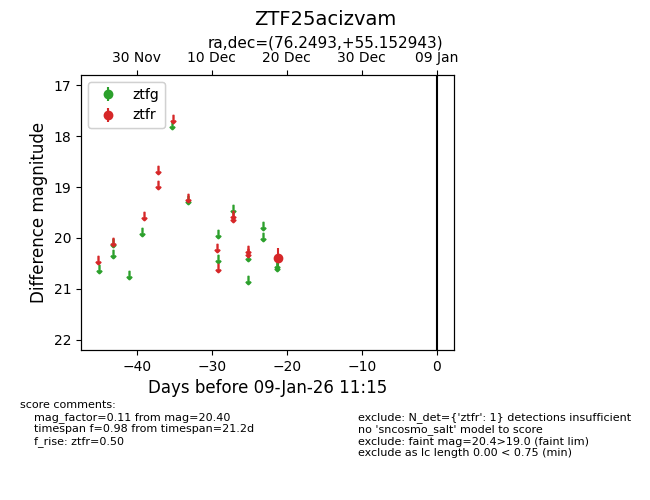
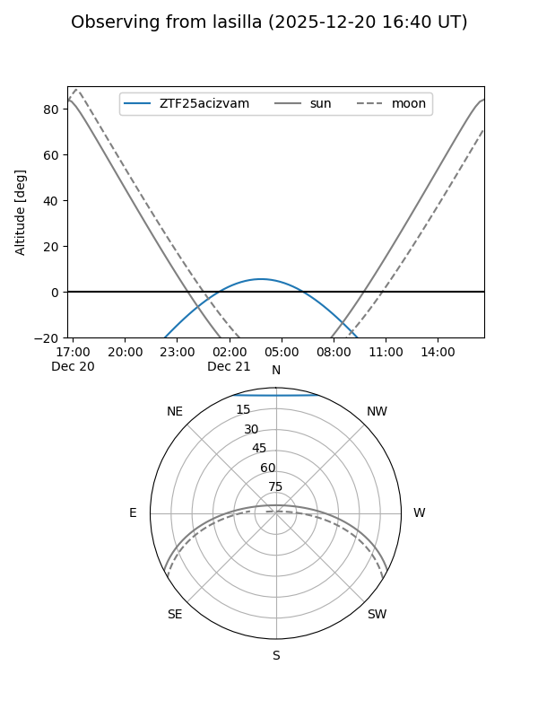
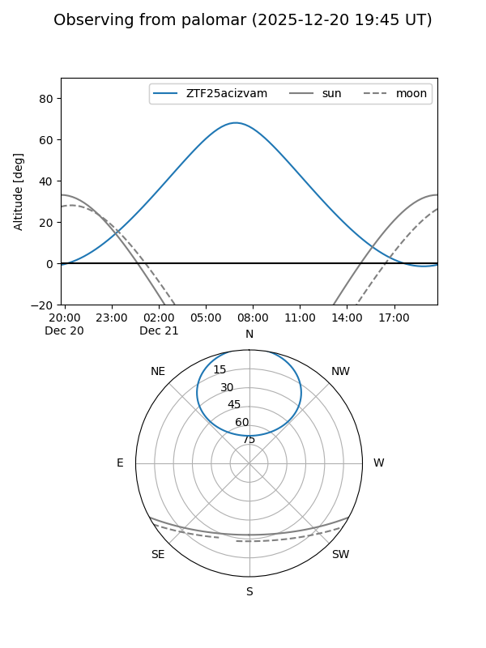

ZTF25acizvam
Target ZTF25acizvam at 2025-12-21 07:28
Aliases and brokers:
FINK: fink-portal.org/ZTF25acizvam
Lasair: lasair-ztf.lsst.ac.uk/objects/ZTF25acizvam
ALeRCE: alerce.online/object/ZTF25acizvam
alt names
ZTF25acizvam (ztf,fink_ztf)
Coordinates:
equatorial (ra, dec) = 76.2493,+55.15294
equatorial (HMS+DMS) = 05:04:59.83,+55:09:10.59
galactic (l, b) = (154.0250,+8.42055)
Flags:
Photometry:
last ztfr=20.40
1 ztfr detections
Lightcurve

Visibility


Additional plots